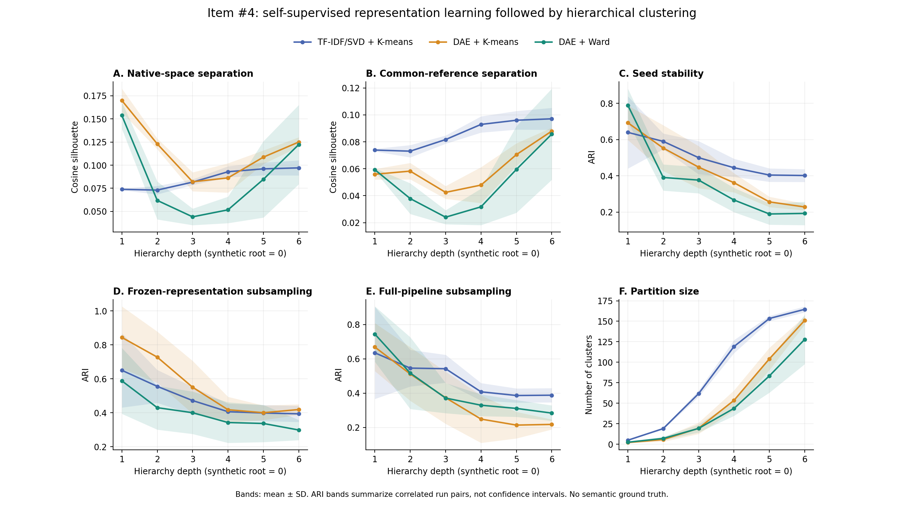

12,418개 CVE 전체를 추적합니다. LLM·사전학습 언어모델·CWE 정답 라벨은 사용하지 않습니다. 모델 입력은 CVE별 출처 원문입니다. 식별 모호성·기존 제외 표시는 메타데이터로 보존하며, 이 실험에서는 텍스트를 임의 수정하거나 CVE를 조용히 제외하지 않습니다.
svd_kmeans: TF-IDF/SVD + 재귀 K-means. ssl_kmeans: Denoising Autoencoder + 같은 재귀 K-means. ssl_ward: 같은 잠재벡터 + 재귀 Ward 분할. 전체 가상 루트는 깊이 0이며 최대 깊이는 고정한 CWE-1000 그래프의 최장 경로에서 계산합니다. 각 단계가 CWE 추상화 수준이라는 의미는 아닙니다.
seed: 전체 자료에서 초기값 변경. frozen_resample: 표현과 전처리를 고정한 80% 그룹 재표집. pipeline_resample: 표본 안에서 TF-IDF/SVD와 자기지도학습부터 다시 실행. 재표집은 복원 없는 subsampling이며 동일한 정제 텍스트를 가진 CVE는 함께 선택합니다.
Silhouette는 고정한 평가 CVE 중 각 실행에 포함된 질의점에서 계산하되, 질의점마다 그 실행의 모든 CVE까지 거리를 사용합니다. native는 해당 표현 공간, reference는 전체 자료로 고정한 공통 SVD 공간입니다. reference는 평가에만 사용하며 pipeline_resample 학습 입력에 들어가지 않습니다. 모든 거리는 L2 정규화 벡터의 cosine distance입니다.
ARI는 실행 두 개의 공통 CVE를 정렬하고 깊이별로 계산합니다. 군집 번호를 수동 대응하지 않습니다. 조기 종료한 가지는 부모 ID를 유지합니다. 단일 군집 등 퇴화한 비교는 별도 집계하며 평균 ARI만으로 안정성을 주장하지 않습니다. 표의 ARI는 비퇴화 쌍의 평균입니다. 실행 쌍들은 독립 표본이 아니므로 p10/p90·표준편차를 신뢰구간으로 해석하지 않습니다.
이 결과는 기하학적 분리도와 재현성 평가입니다. 보고서 범주, 운영 질문 호환성, 악용 가능성, VEX 정확도를 검증하지 않습니다. vendor·제품명·반복 문구에 따른 군집 여부는 별도 원문 검토가 필요합니다.

| 비교군 | 방법 | 깊이 | 평균 군집 수 | Native Silhouette | Reference Silhouette | ARI | 비교 쌍 수 | 퇴화 쌍 수 |
|---|---|---|---|---|---|---|---|---|
| seed | svd_kmeans | 1 | 5.0000 | 0.0739 | 0.0739 | 0.6398 | 10 | 0 |
| seed | svd_kmeans | 2 | 19.2000 | 0.0731 | 0.0731 | 0.5900 | 10 | 0 |
| seed | svd_kmeans | 3 | 61.8000 | 0.0817 | 0.0817 | 0.5002 | 10 | 0 |
| seed | svd_kmeans | 4 | 119.2000 | 0.0929 | 0.0929 | 0.4446 | 10 | 0 |
| seed | svd_kmeans | 5 | 153.4000 | 0.0960 | 0.0960 | 0.4043 | 10 | 0 |
| seed | svd_kmeans | 6 | 164.6000 | 0.0971 | 0.0971 | 0.4017 | 10 | 0 |
| seed | ssl_kmeans | 1 | 2.2000 | 0.1699 | 0.0559 | 0.6928 | 10 | 0 |
| seed | ssl_kmeans | 2 | 5.8000 | 0.1230 | 0.0583 | 0.5531 | 10 | 0 |
| seed | ssl_kmeans | 3 | 19.6000 | 0.0820 | 0.0425 | 0.4479 | 10 | 0 |
| seed | ssl_kmeans | 4 | 53.6000 | 0.0863 | 0.0479 | 0.3620 | 10 | 0 |
| seed | ssl_kmeans | 5 | 104.2000 | 0.1087 | 0.0705 | 0.2562 | 10 | 0 |
| seed | ssl_kmeans | 6 | 151.2000 | 0.1250 | 0.0880 | 0.2281 | 10 | 0 |
| seed | ssl_ward | 1 | 2.6000 | 0.1538 | 0.0593 | 0.7896 | 10 | 0 |
| seed | ssl_ward | 2 | 7.2000 | 0.0619 | 0.0379 | 0.3909 | 10 | 0 |
| seed | ssl_ward | 3 | 19.4000 | 0.0442 | 0.0241 | 0.3764 | 10 | 0 |
| seed | ssl_ward | 4 | 43.8000 | 0.0517 | 0.0318 | 0.2666 | 10 | 0 |
| seed | ssl_ward | 5 | 83.4000 | 0.0847 | 0.0595 | 0.1895 | 10 | 0 |
| seed | ssl_ward | 6 | 128.0000 | 0.1223 | 0.0857 | 0.1926 | 10 | 0 |
| frozen_resample | svd_kmeans | 1 | 4.8000 | 0.0737 | 0.0737 | 0.6505 | 190 | 0 |
| frozen_resample | svd_kmeans | 2 | 19.9000 | 0.0754 | 0.0754 | 0.5559 | 190 | 0 |
| frozen_resample | svd_kmeans | 3 | 55.9000 | 0.0810 | 0.0810 | 0.4721 | 190 | 0 |
| frozen_resample | svd_kmeans | 4 | 98.6000 | 0.0882 | 0.0882 | 0.4065 | 190 | 0 |
| frozen_resample | svd_kmeans | 5 | 124.1000 | 0.0925 | 0.0925 | 0.3988 | 190 | 0 |
| frozen_resample | svd_kmeans | 6 | 134.0000 | 0.0930 | 0.0930 | 0.3939 | 190 | 0 |
| frozen_resample | ssl_kmeans | 1 | 2.8000 | 0.1614 | 0.0501 | 0.8441 | 190 | 0 |
| frozen_resample | ssl_kmeans | 2 | 6.7500 | 0.1188 | 0.0651 | 0.7281 | 190 | 0 |
| frozen_resample | ssl_kmeans | 3 | 26.0500 | 0.0976 | 0.0535 | 0.5505 | 190 | 0 |
| frozen_resample | ssl_kmeans | 4 | 71.6500 | 0.1115 | 0.0697 | 0.4181 | 190 | 0 |
| frozen_resample | ssl_kmeans | 5 | 117.9500 | 0.1186 | 0.0835 | 0.4004 | 190 | 0 |
| frozen_resample | ssl_kmeans | 6 | 140.7500 | 0.1210 | 0.0879 | 0.4192 | 190 | 0 |
| frozen_resample | ssl_ward | 1 | 2.7500 | 0.1428 | 0.0549 | 0.5883 | 190 | 0 |
| frozen_resample | ssl_ward | 2 | 6.4000 | 0.0866 | 0.0528 | 0.4302 | 190 | 0 |
| frozen_resample | ssl_ward | 3 | 20.1000 | 0.0621 | 0.0392 | 0.4005 | 190 | 0 |
| frozen_resample | ssl_ward | 4 | 49.2000 | 0.0698 | 0.0467 | 0.3427 | 190 | 0 |
| frozen_resample | ssl_ward | 5 | 81.0000 | 0.0965 | 0.0675 | 0.3371 | 190 | 0 |
| frozen_resample | ssl_ward | 6 | 107.2500 | 0.1227 | 0.0893 | 0.2985 | 190 | 0 |
| pipeline_resample | svd_kmeans | 1 | 4.7000 | 0.0728 | 0.0740 | 0.6354 | 45 | 0 |
| pipeline_resample | svd_kmeans | 2 | 18.6000 | 0.0726 | 0.0737 | 0.5460 | 45 | 0 |
| pipeline_resample | svd_kmeans | 3 | 53.6000 | 0.0815 | 0.0820 | 0.5425 | 45 | 0 |
| pipeline_resample | svd_kmeans | 4 | 97.0000 | 0.0880 | 0.0876 | 0.4076 | 45 | 0 |
| pipeline_resample | svd_kmeans | 5 | 120.7000 | 0.0925 | 0.0916 | 0.3861 | 45 | 0 |
| pipeline_resample | svd_kmeans | 6 | 131.5000 | 0.0931 | 0.0921 | 0.3878 | 45 | 0 |
| pipeline_resample | ssl_kmeans | 1 | 2.5000 | 0.1670 | 0.0542 | 0.6689 | 45 | 0 |
| pipeline_resample | ssl_kmeans | 2 | 6.5000 | 0.1235 | 0.0595 | 0.5119 | 45 | 0 |
| pipeline_resample | ssl_kmeans | 3 | 21.0000 | 0.0934 | 0.0530 | 0.3731 | 45 | 0 |
| pipeline_resample | ssl_kmeans | 4 | 55.0000 | 0.0915 | 0.0543 | 0.2484 | 45 | 0 |
| pipeline_resample | ssl_kmeans | 5 | 92.1000 | 0.1097 | 0.0690 | 0.2133 | 45 | 0 |
| pipeline_resample | ssl_kmeans | 6 | 121.9000 | 0.1203 | 0.0810 | 0.2173 | 45 | 0 |
| pipeline_resample | ssl_ward | 1 | 2.4000 | 0.1512 | 0.0590 | 0.7449 | 45 | 0 |
| pipeline_resample | ssl_ward | 2 | 5.7000 | 0.0824 | 0.0423 | 0.5171 | 45 | 0 |
| pipeline_resample | ssl_ward | 3 | 18.0000 | 0.0433 | 0.0282 | 0.3711 | 45 | 0 |
| pipeline_resample | ssl_ward | 4 | 37.3000 | 0.0544 | 0.0330 | 0.3294 | 45 | 0 |
| pipeline_resample | ssl_ward | 5 | 65.5000 | 0.0893 | 0.0572 | 0.3107 | 45 | 0 |
| pipeline_resample | ssl_ward | 6 | 98.4000 | 0.1305 | 0.0926 | 0.2834 | 45 | 0 |
원시 지표: depth_metrics.jsonl, ari_pairs.jsonl. 집계: comparison_summary.json, stability_summary.json. 대표 CVE·출처는 representative_cves.jsonl, 전체 깊이별 배정은 reference_assignments.jsonl에 있습니다.